Designing content for the company's
social media platforms.
With this project i designed, alongside
2 other designers a series of posts, storys
and videos for social media, with the intention
of bringing people to join ASB.
In this project i had the chance to design a series
of posts for bayer's instagram for the promotion
of their early event “stem4health”.


 
